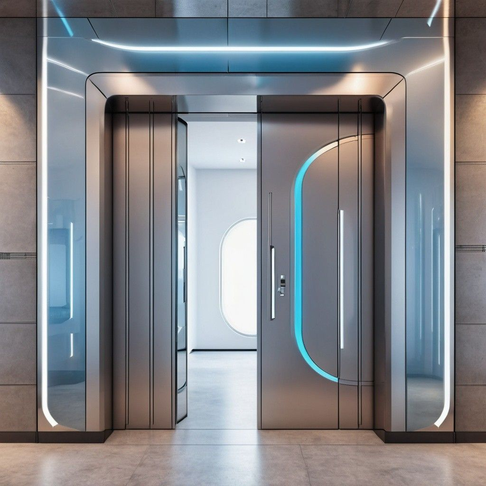
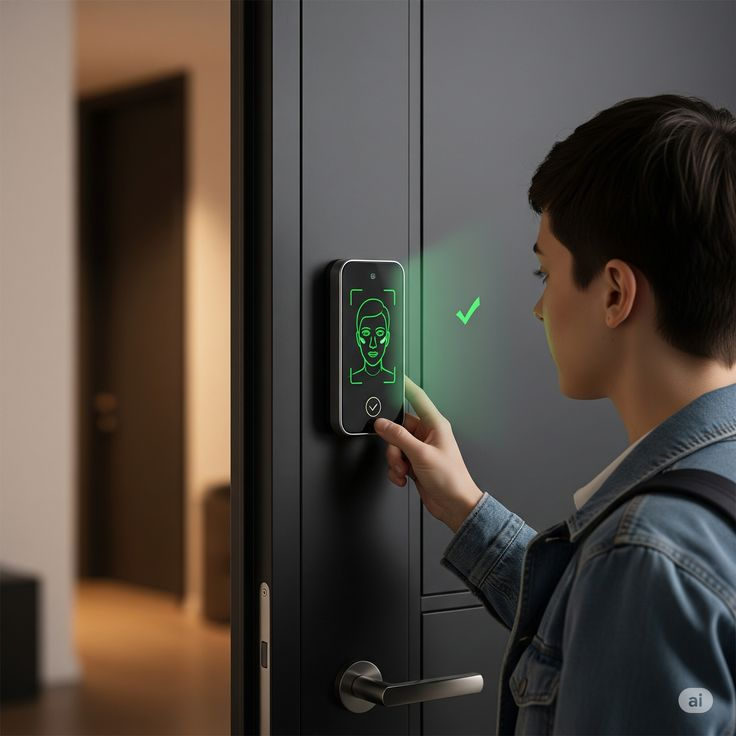
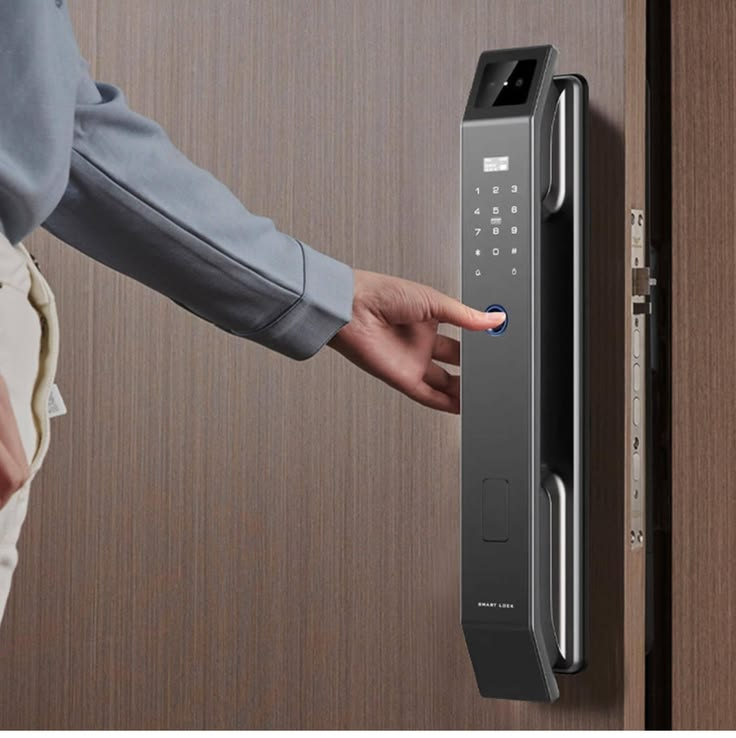
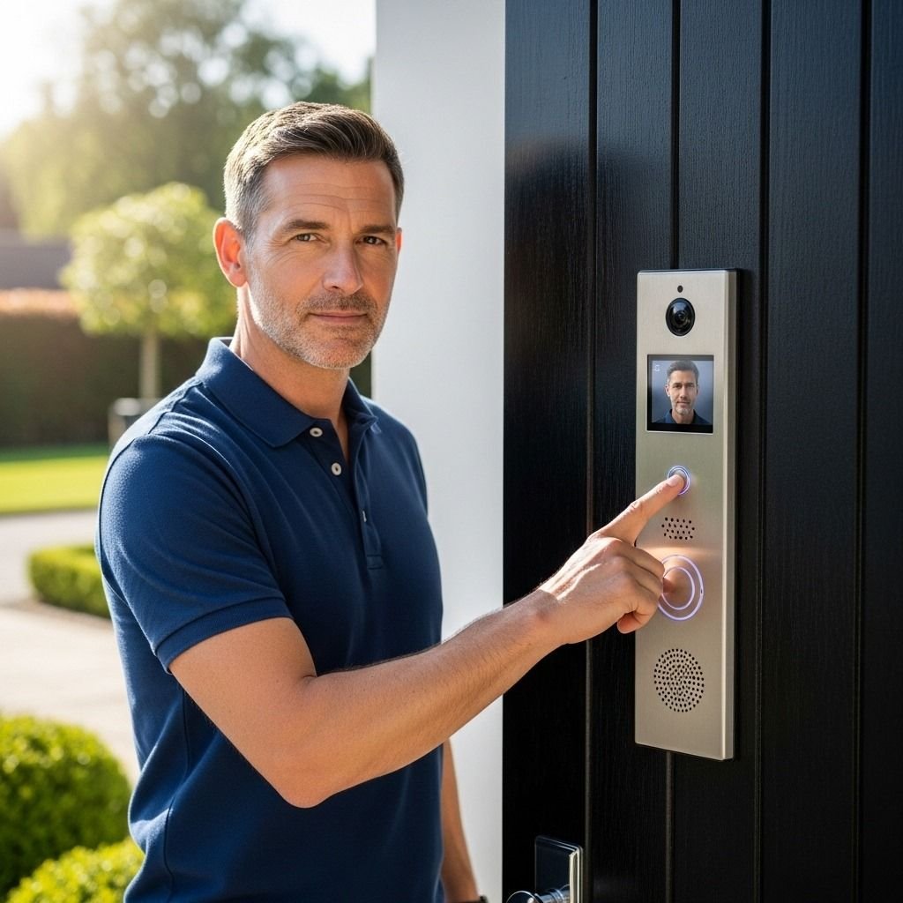
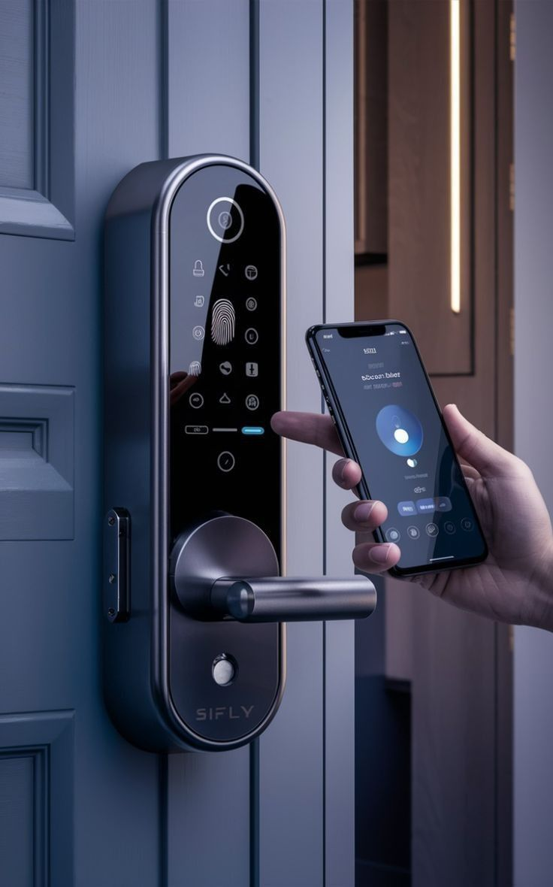

Contrôle d’accès selon système retenu
ALPHA STONE · FICHE PRODUIT
Portes spécifiques & contrôle d’accès
ISContrôle d’accès
Solutions techniques et portes spéciales pouvant recevoir, selon compatibilité, des équipements de contrôle d’accès et de sécurité adaptés au cahier des charges.





GALERIE PRODUIT
Portes techniques & accès
Visuels de la gamme disponibles dans la documentation du projet. Les finitions, accessoires et dimensions peuvent varier selon la configuration retenue.
FICHE TECHNIQUE
Configuration de référence
| Famille | IS / portes acier techniques et solutions spéciales selon catalogue |
|---|---|
| Contrôle d’accès | Badge, code, biométrie ou autres interfaces selon système retenu |
| Interphonie | Intégration possible selon projet |
| Commande connectée | Selon compatibilité avec la serrure et le système de contrôle d’accès |
| Applications | Locaux techniques, accès sécurisés, tertiaire et projets spécifiques |
| Validation | Interfaces électriques, alimentation, serrure, câblage et protocole à valider avant fabrication |
COUPE EXPLICATIVE
Principe constructif
Important : Les images de contrôle d’accès sont illustratives. Les équipements exacts, marques, protocoles et compatibilités sont définis dans l’offre technique du projet.
Lecture du schéma
Le dessin est un schéma de principe destiné à expliquer la constitution et le fonctionnement de la porte. Il ne remplace pas le plan DWG/PDF d’exécution validé par ALPHA STONE.
FICHE PRODUIT · ALPHA STONE
IS · Portes techniques & accès sécurisés
Solutions acier techniques et configurations spéciales pour locaux techniques, accès sécurisés et projets tertiaires.
APPLICATIONSLocaux techniques · Accès sécurisés · Projets spécifiques
POSITIONNEMENTSolution technique selon configuration du projet
VALIDATIONFiche, plans et justificatifs applicables au modèle retenu
POINTS CLÉS
Interfaces électriques et câblage à valider avant fabrication
Équipements exacts définis dans l’offre technique du projet
OM TRADING · ALGÉRIE